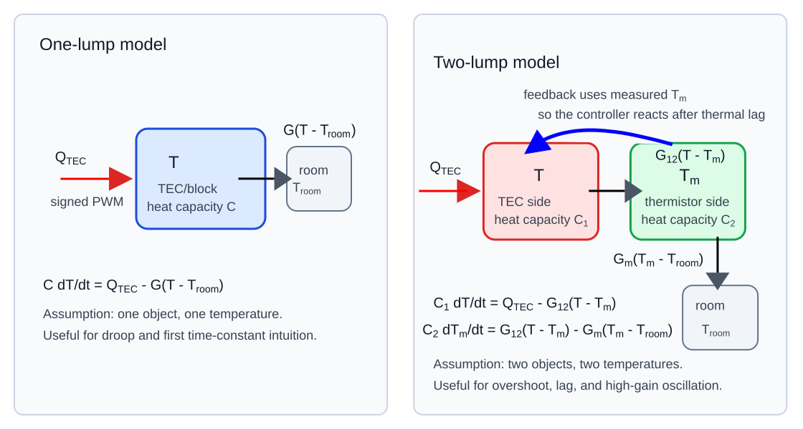

Module 6, Part II: TEC Process Model And The Simulation¶
This is the second part of Module 6. Complete Part I: P/PI Control And Lumped Modeling first. Both parts use the same prepared simulation: Part I emphasizes the one-lump model, while Part II compares the one- and two-lump models.
Introductory Material¶
Purpose¶
This part follows the first Module 6 modeling work and the initial physical PI implementation. Begin by tuning \(K_p\) and \(K_i\) on the apparatus, then connect three things:
- the physical TEC/block/thermistor system,
- the feedback-control equations,
- a Python simulation GUI that lets you change model parameters and watch the predicted temperature response.
This module is not about perfect prediction. It is about learning how a simple model can explain droop, overshoot, lag, and the onset of instability.
Learning Objectives¶
By the end of Module 6, Part II, you should be able to:
- write and interpret the coupled energy balances for the TEC-side and measured-block thermal masses;
- show how two coupled first-order temperature equations produce one second-order equation for the measured temperature;
- use the two-lump model to explain phase lag, overshoot, and underdamped behavior that the one-lump model cannot reproduce;
- predict and verify how \(K_p\), the coupling conductance, and the two thermal capacitances affect the simulated transient;
- characterize matched physical P and PI responses using rise time, overshoot, settling time, steady-state error, and oscillation period; and
- select and justify \(K_p\) and \(K_i\) by connecting theory, simulation, and measurement while accounting for actuator saturation.
These objectives are assessed through Theory Assignment 2, the Part 3 and Part 6 simulation records, the six-run physical protocol, and A3 Questions 3 and 5–7.
Class Theme¶
Model The Process Before You Trust The Controller
The "process" is the part of the feedback loop that the controller is trying to control: the TEC, aluminum block, thermistor, heat loss to the room, and thermal lag between where heat enters and where temperature is measured.
At A Glance¶
Before class, spend your time in this order:
- 45-60 min: Read Lienhard Chapter 1 with emphasis on energy balance, heat flux, conduction, thermal resistance, heat capacity, and lumped models. Read through p. 28. Skip most of the last section on radiation.
- 30-45 min: Prepare Problems 1.3 and 1.8 for possible board work.
- 10-15 min: Skim Examples 1.1, 1.2, and 1.5 for worked-modeling patterns.
- 15-20 min: Run the Python demo and GUI once so class time can focus on interpretation instead of setup.
- 15-20 min: Copy and annotate the three model equations; complete Theory Assignment 1 and begin Theory Assignment 2 if time permits.
During class on October 19, the approximate schedule for one 170-minute meeting is:
- 0-15 min: Safety check, define the gain-tuning metrics, and inspect the physical PI controller.
- 15-75 min: Tune \(K_p\) and \(K_i\) on the TEC; preserve one satisfactory response and one poor but safe response.
- 75-95 min: Opening discussion and board work on Lienhard Problems 1.3 and 1.8.
- 95-115 min: Connect the board work to the model equations in Module 6 and the one-lump/two-lump diagram.
- 115-140 min: Compare one- and two-lump responses and connect thermal lag to the experimental tuning observations.
- 140-160 min: Complete Theory Assignment 2 in groups and connect the two-lump equations to thermistor placement.
- 160-170 min: Wrap up: what the model explains, what it leaves out, and why the long-rod experiment will require a spatial model.
Outside-Class Workload Budget¶
| Session | Work | Planned time |
|---|---|---|
| S14 | Read this assignment and the assigned Lienhard Chapter 1 material | 90 minutes |
| S14 | Prepare Problems 1.3 and 1.8 and inspect Examples 1.1, 1.2, and 1.5 | 60 minutes |
| S14 | Prepare the PI tuning table; run the simulation and annotate the equations | 45 minutes |
| S14 | Total associated with S14 | 3 hours 15 minutes |
| S15 | Complete the model comparisons and A3 evidence | 120 minutes |
| S15 | Complete the theory-bridge questions used in the oral discussion | 60 minutes |
| S15 | Commit, push, and prepare the A3 submission | 30 minutes |
| S15 | Total associated with S15 | 3 hours 30 minutes |
The Chapter 1 time is for reading with equations and physical interpretation, not for a quick skim. The optional extension is not part of the four-hour budget and should be attempted only after required work is complete.
Vocabulary¶
- Process: the physical system being controlled. Here, the process is the TEC/block/thermistor thermal system.
- State variable: a number that describes the current state of the model, such as temperature.
- Heat: energy transferred because of a temperature difference. Heat is not the same thing as temperature; temperature tells how hot something is, while heat is energy moving into or out of the system.
- Lumped model: a model that treats an extended object as if the entire object were at the same temperature. The lump can be viewed as a point object of finite thermal mass. See the one-lump/two-lump figure.
- Thermal mass: a synonym for heat capacity. A larger thermal mass changes temperature more slowly.
- Thermal lag: delay between changing the actuator and observing the measured temperature response.
- Droop: steady-state error in proportional-only control.
- Saturation: the actuator command reaches its limit, such as PWM 255. This could be a physical or software imposed limit.
Model Equations And Numerical Algorithm¶
The Python GUI separates the physical model from the controller. Select either a one-lump or two-lump process, then select open-loop, P, or PI control.
One-Lump Physical Model¶
The one-lump model treats the TEC and measured block as one temperature:
Every term has units of watts. The TEC coefficient is piecewise: the program uses \(P_{u,h}\) for a positive heating command and \(P_{u,c}\) for a negative cooling command. Their ratio is
Two-Lump Physical Model¶
The two-lump model separates the TEC-side temperature \(T\) from the measured temperature \(T_m\):
Here \(C_T\) and \(C_m\) are thermal capacitances, \(G\) couples the two lumps, and \(H\) describes passive heat transfer from the measured lump to the room. The controller responds to \(T_m\), but \(T\) can move first. That lag can produce overshoot or oscillation.
From Two First-Order Equations To One Second-Order Equation¶
Consider one heating or cooling direction so that \(P_u\) is constant, assume the PWM is not saturated, and use P control:
Let \(\theta_T\) and \(\theta_m\) be deviations of \(T\) and \(T_m\) from their steady-state values. The constant steady-state terms cancel, leaving
The second equation gives the hidden TEC-side temperature in terms of the measured temperature and its rate of change:
Differentiate the second equation, use the first equation to replace \(\dot\theta_T\), and then use the expression above to replace \(\theta_T\). The result is one second-order differential equation for the measured temperature:
Thus two coupled first-order equations for two stored-energy states are equivalent to one second-order equation for \(T_m\). Substituting \(\theta_m\propto e^{st}\) gives
Depending on the parameters, the two eigenvalues can be real or a complex conjugate pair. Complex eigenvalues produce an underdamped transient even though the apparatus contains no mechanical momentum.
At steady state, both temperature derivatives are zero, so
The internal conductance \(G\) sets the temperature difference between the two lumps, but it cancels from the overall balance \(P_u u=H(T_m-T_{\mathrm{amb}})\). This is the quantitative reason the one-lump model can predict the final measured temperature and P-control droop even when it fails to predict the high-gain transient.
Controller Choices¶
The measured temperature is \(T\) for the one-lump model and \(T_m\) for the two-lump model. Define
The three controller choices are
The signed command is clamped to the PWM limit. If the anti-windup option is enabled, the program prevents the integral state from continuing to grow when the actuator is saturated in the same direction as the error.
What The Algorithm Does At Each Time Step¶
The supplied program performs the numerical work, but you should understand its sequence:
- Read the model's measured temperature, \(T\) or \(T_m\).
- Calculate the error and the requested open-loop, P, or PI command.
- Clamp the command to the signed PWM limit.
- Select \(P_{u,h}\) or \(P_{u,c}\) from the sign of the applied command.
- Evaluate the heat-balance derivatives.
- Advance \(T\) and, for the two-lump model, \(T_m\) by one Euler step.
- Update the integral state when PI control is active and anti-windup permits the update.
For example, the first two-lump Euler updates are
You are not required to write this code. Your task is to connect each algorithmic step to the heat balance, make predictions, and test them with controlled parameter changes.

Course-specific lumped-model diagram.
Thermal Transport Theory Assignments¶
This part of the course uses lumped thermal models. A lumped model assumes that one object, such as the TEC/block assembly, can be described by one temperature. This is an approximation. It is useful before we move to the long rod, where temperature depends on position.
Theory Assignment 1: One Lumped Temperature¶
Start from an energy balance:
rate of change of thermal energy = heat added by TEC - heat lost to room
Use:
C dT/dt = Q_tec - H*(T - T_amb)
where:
Cis the heat capacity of the object in J/°C,His the thermal conductance to the room in W/°C,Q_tecis the heat flow supplied by the TEC in W,Tis the object's temperature in °C,T_ambis the ambient room temperature in °C.
Divide by C:
dT/dt = -(T - T_amb)/tau + A*signed_PWM
where:
tau = C/H
and A is the conversion between signed PWM and heating/cooling rate. The time
constant tau has units of seconds. If signed_PWM is an Arduino PWM count
between -255 and +255, then A has units of °C/(s PWM count).
Do this before class:
- Show the algebra that converts
C dT/dt = Q_tec - H*(T - T_amb)into the simplified model above. - Explain in words what
taumeans. - Predict what happens when
tauis large. - Predict what happens when
His large. - Find the steady-state temperature for a constant
signed_PWM.
Theory Assignment 2: Two Lumped Temperatures¶
The one-temperature model assumes that the measured temperature instantly equals the actuator-side temperature. The next model separates them:
T = actuator-side TEC/block temperature
Tm = measured thermistor/block temperature
A simple two-temperature model is:
C_T dT/dt = Q_tec - G*(T - Tm)
C_m dTm/dt = G*(T - Tm) - H*(Tm - T_amb)
Here C_T and C_m are heat capacities in J/°C, G is the conductance
between the two lumps, and H is the conductance from the measured lump to
the room. Each term has units of W. The left side is a rate of thermal-energy
change. The right side is the sum of heat flows into and out of each lump.
Do this before class:
- Identify which term transfers heat from the TEC side to the measured thermistor/block side.
- Identify which term describes heat loss from the measured block to room air.
- Explain why
Tmcan lag behindT. - Explain why a controller that uses
Tmmay react too late. - Compare this model to the simplified rate-constant form:
text
dTm/dt = k21*(T - Tm) - km*(Tm - T_amb)
Later In The Course: Differential Equations In Space¶
The long-rod experiment cannot be described by a single temperature. It will need a temperature field. In its simplest form as a long, thin rod, temperature depends only on longitudinal position and is independent of radius.
For the rod we will move toward diffusion equations of the form:
and, for a rod exchanging heat with the room from its sides, a term that pulls the rod toward room temperature:
In these equations, alpha is the thermal diffusivity in m²/s and beta is a
side-loss rate constant in 1/s.
You do not need to solve these equations in Module 6. For now, your job is to understand how conservation of energy produces the simple lumped equations. The spatial differential equations come later, when we measure temperature along the long metal cylinder.
Pre-Class Assignment¶
How To Run The Python GUI¶
Clicking the Python source-code link opens or downloads the .py file. It does
not run the simulation. To run the model, download the file and run it from a
folder on your own computer.
First make a working folder and put the Python file there:
mkdir -p ~/phys39-lab7
cd ~/phys39-lab7
Download this file into that folder: Lab_6_7_modeling_tec.py.
Set up Python the first time you use this folder:
python3 -m venv .venv
source .venv/bin/activate
python -m pip install matplotlib
Run the non-interactive demo:
python Lab_6_7_modeling_tec.py --demo --output Lab_6_7_modeling_tec_demo.png
This saves a plot in the same folder:
Lab_6_7_modeling_tec_demo.png
Then run the desktop GUI:
python Lab_6_7_modeling_tec.py
After the first setup, start from this folder and run:
cd ~/phys39-lab7
source .venv/bin/activate
python Lab_6_7_modeling_tec.py
Before Class¶
-
Read Lienhard, Chapter 1: Introduction. Focus on the parts that connect directly to this module: conservation of energy, heat flux, conduction, thermal resistance, heat capacity, and lumped thermal models. Read through p. 28. Skip most of the last section on radiation.
-
Prepare to work selected Chapter 1 problems at the board. You may be randomly selected to present one of these:
-
Problem 1.3: heat flux through a slab. This reinforces Fourier's law, units, and the meaning of a temperature gradient.
- Problem 1.8: cooling of a copper sphere in an air stream. This is the cleanest Chapter 1 example of a one-lump first-order temperature model.
For each problem, be ready to identify the physical system, write the heat balance or heat-flow law, check units, and explain what approximation makes the problem solvable.
-
Pay special attention to these Chapter 1 examples:
-
Example 1.1: conduction through a slab. This is the cleanest worked example of Fourier's law and heat flux.
- Example 1.2: a copper slab protected by stainless steel. This is useful because the same steady heat flow passes through multiple layers, like thermal resistances in series.
-
Example 1.5: a thermocouple affected by convection and radiation. This is a good reminder that a temperature sensor does not always read the temperature you think it reads.
-
Open the prepared Python simulation:
text
Lab_6_7_modeling_tec.py
- Run the non-interactive demo:
bash
python Lab_6_7_modeling_tec.py --demo --output Lab_6_7_modeling_tec_demo.png
- Look at the generated plot:
text
Lab_6_7_modeling_tec_demo.png
The bottom of the PNG and the terminal output list the model parameters used to make the plot. Record those values so the plot is reproducible.
- Run the Python GUI:
bash
python Lab_6_7_modeling_tec.py
- In your notebook, copy the three model equations and label the meaning of each variable.
- Complete Theory Assignment 1. Begin Theory Assignment 2 if you have time.
Pre-Class Questions¶
Write short answers before class.
- In open-loop mode, what happens if the signed PWM command is zero?
- In proportional control, why does the PWM become small when the measured temperature gets close to the setpoint?
- Why can proportional-only control leave a steady-state error?
- In the thermal-mass model, why might
TandTmbe different? - Which parameter in the model most directly changes the amount of thermal lag?
In-Class Assignment¶
What You Will Do¶
You will:
- run the Python simulation GUI,
- tune \(K_p\) and \(K_i\) on the physical TEC,
- compare matched physical P and PI responses,
- identify the physical meaning of each control,
- reproduce droop in proportional control,
- produce overshoot or oscillation by increasing gain or lag,
- compare the one-temperature model to the two-temperature model,
- trace one controlled parameter through the equations and numerical algorithm,
- explain what this model teaches you about the real TEC experiment.
October 19: Tune The Physical PI Controller¶
Continue with the controller implemented in Module 6, Part I. Keep the setpoint, PWM limit, apparatus, thermistor placement, and starting temperature as similar as practical between trials. Change one gain at a time.
Follow the required six-run experimental protocol. Use three values of \(K_p\) with \(K_i=0\), then hold the intermediate \(K_p\) fixed while using three values of \(K_i\). Include the same upward and downward setpoint steps in every run. Zero the integral state before each run, and set PWM to zero before changing controller mode or resetting the integral.
For every retained run, record:
| Run | Mode | \(K_p\) (PWM/°C) | \(K_i\) (PWM/(°C s)) | Up/down traces saved? | Saturation? | Notes |
|---|---|---|---|---|---|---|
| 1 | P, low \(K_p\) | 0 | ||||
| 2 | P, intermediate \(K_p\) | 0 | ||||
| 3 | P, high \(K_p\) | 0 | ||||
| 4 | PI, low \(K_i\) | |||||
| 5 | PI, intermediate \(K_i\) | |||||
| 6 | PI, high \(K_i\) |
For detailed step-response analysis, calculate rise time, percent overshoot, settling time, steady-state error, and oscillation period when applicable only for Run 3 and Run 6, in both directions. Define the rise-time and settling-time criteria you use. Run 5 is your candidate final gain pair, but revise that choice if the evidence supports another pair; there is no single universally best pair. Your record must show the measured temperature, setpoint, total applied PWM, \(u_P\), \(u_I\), and error versus time.
Before applying power, verify the independent Arduino temperature shutdown and have the instructor approve the proposed gain range. Stop and set PWM to zero if the temperature moves in the wrong direction, the display freezes, saturation persists unexpectedly, or oscillations grow.
Part 1: One-Lump Open-Loop Model¶
Set the physical model to one_lump and the controller to open_loop.
- Set the signed PWM command to zero. Run the model and confirm that the temperature relaxes toward room temperature.
- Enter a positive signed PWM command and try several values.
- Enter a negative signed PWM command and try several values.
- Record what changes in the temperature plot and the PWM plot.
Answer:
- What term in the equation represents heat exchange with the room?
- What term represents the TEC actuator?
- Why is this not feedback control?
Part 2: One-Temperature Proportional Model¶
Set the physical model to one_lump and the controller to P.
- Set
T_setabove room temperature. - Set a small
Kp. - Run until the trace settles.
- Record the final temperature, setpoint, error, and approximate PWM.
- Increase
Kpand repeat.
Make a table:
| Trial | T_set |
Kp |
final T |
final error | final PWM | Notes |
|---|---|---|---|---|---|---|
| 1 | ||||||
| 2 | ||||||
| 3 |
Answer:
- Does increasing
Kpreduce droop? - Does increasing
Kpeliminate droop completely? - What happens when PWM saturates?
Part 3: Two-Temperature Thermal-Mass Model¶
Set the physical model to two_lump and the controller to P.
Begin with the measured-parameter defaults
Set \(K_i=0\), reset before every comparison, and follow this sequence:
- Compare
one_lumpandtwo_lumpat \(K_p=50\) PWM/°C. - Repeat at \(K_p=120\) PWM/°C, close to the experimentally observed underdamped regime.
- In
two_lump, watch the difference between the TEC-side temperature \(T\) and measured temperature \(T_m\) as the controller changes the command. - Hold \(K_p\) fixed and vary \(G\) above and below its starting value. Predict how the lag will change before each run.
- Return \(G\) to its starting value. Vary only one thermal capacitance at a time and compare the result with your prediction.
- Identify a transition from no overshoot to overshoot. If oscillations appear, record their period and whether they decay or grow.
Make a table:
| Trial | Kp |
\(G\), \(C_T\), or \(C_m\) | overshoot? | oscillation? | qualitative behavior |
|---|---|---|---|---|---|
| 1 | |||||
| 2 | |||||
| 3 |
Answer:
- Which temperature does the controller use to calculate error?
- Why does measuring the delayed temperature make high gain dangerous?
- What does this suggest about placing a thermistor far from the TEC?
Part 4: Connect The Model To PI Feedback¶
The same feedback structure can be written in compact mathematical form:
error = setpoint - measured temperature
controller output = proportional part + integral part
process turns controller output into a new temperature
For proportional-only control:
output = Kp * error
For PI control:
integral = integral + error*dt
output = Kp*error + Ki*integral
In your notebook:
- Draw the feedback loop: setpoint, error, controller, process, measured temperature.
- Identify where the Python model calculates each part.
- Explain why the integral term should reduce droop.
- Explain why integral control can overshoot if the actuator saturates.
Part 5: Complete The Two-Temperature Theory Assignment¶
Finish Theory Assignment 2. Then answer:
- Which model variable is closest to what the thermistor measures?
- Which model variable is closest to where the TEC applies heat?
- If the thermistor is moved farther from the TEC, which model parameter should change?
- Why is this still a lumped model rather than a full heat-equation model?
Part 6: Trace One Parameter Through The Algorithm¶
Choose one parameter: \(C_T\), \(C_m\), \(G\), \(H\), \(K_p\), or \(K_i\).
- Identify every model or controller equation containing that parameter.
- Predict how increasing it will affect the temperature trace, command, error, or lag.
- Pause the simulation, change only that parameter, and resume.
- Compare the observed change with your prediction.
- Explain where the parameter enters the Euler-update sequence described above.
The goal is to understand how the prepared algorithm represents the physics and controller, not to modify its source code.
Part 7: Bridge To The Long Rod¶
The TEC-only model has no spatial coordinate. The later long-rod experiment will require a model in which temperature depends on both position and time.
The stationary fin model adds space:
temperature depends on x
heat conducts along the rod
heat leaks from the side of the rod to room air
The oscillating fin model adds time-periodic boundary forcing:
base temperature oscillates
amplitude decays with distance
phase lags with distance
Answer:
- What is missing from the TEC-only model that the rod model must include?
- Why will the rod experiment need more than one thermistor?
- Why are amplitude and phase more useful than just maximum and minimum temperature?
Post-Class Assignment¶
Preserve The Model Evidence¶
Before leaving S15, save the physical PI tuning table and traces, copied
equations, completed theory assignments, parameter tables, screenshots,
algorithm-tracing explanation, and exact run command. Keep the team record in
docs/module_notes/module_07_process_model.md and preserve the prepared simulation
program in your repository.
Oral Review Questions: Process Modeling¶
Use this modeling question bank to check your understanding and prepare A3:
- Which physical lag in the apparatus can produce overshoot or oscillation as gain increases?
- Identify one model parameter, give its units, and explain its physical effect on the simulated response.
Also prepare the Module 5 P-control questions and Module 6 PI-control question.
Model Evidence Record¶
Keep a short module note containing:
- Your copied and labeled model equations.
- Theory Assignment 1.
- Theory Assignment 2.
- Open-loop observations.
- Proportional-control droop table.
- Thermal-mass overshoot/oscillation table.
- Screenshot of the Python GUI.
- Your parameter prediction and algorithm-tracing explanation.
- A paragraph answering:
text
What did the model explain well, and what would it fail to explain about the
real TEC hardware?
Instructor Notes¶
- This module is a consolidation point after manual control and P/PI control.
- Keep the emphasis on physical interpretation, not formal control theory.
- Students should leave understanding why delay plus gain causes trouble.
- The long-rod model should be introduced as a preview, not fully derived here unless the class is ready.